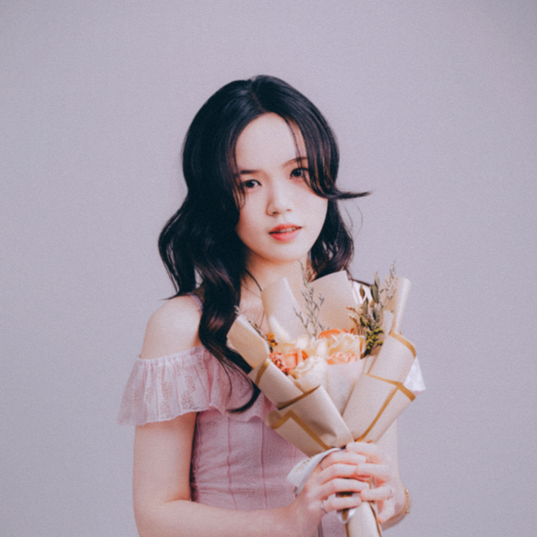

起源
秘密花園從情緒療癒與音樂創作出發，把難以說出口的感受轉換成聲音、色彩與花朵。每一次互動，都是把心情暫時交給花園照顧的過程。
Immersive Experience
A garden grown through music.
以音樂為筆，讓情緒化作花園中的色彩。
About
秘密花園從情緒療癒與音樂創作出發，把難以說出口的感受轉換成聲音、色彩與花朵。每一次互動，都是把心情暫時交給花園照顧的過程。
我們相信情緒不需要被急著修好。它可以被聽見、被命名、被種下，然後在某一天以新的形狀重新開花。
Color Bloom
請選擇一顏色種子，它將為你盛開。每一次綻放，都將帶來一句為你內心中的花園所留下的祝福。
Welcome
從八色種子裡選一種心情，讓它在這裡長成一朵花。
Take a Seed
選一種顏色，留下今天的心情。花會在同一片夜色裡慢慢長出來。
Color Music
十首顏色音樂的試聽入口。選一首歌，讓花園用這種聲音呼吸。
Now Playing
李岳鴒｜2:49
Flower Cards
Secret Gardeners

製作人 / 作曲家 / 行政 / 視覺設計 / Alpha測試版網頁架設
喜歡的花：鳶尾｜喜歡的聲音：蟲鳴鳥啼作曲家 / 聲景錄音 / 聲音設計 /
攝影紀錄 / Beta測試版網站架設
技術控管 / 作曲家 / 聲音設計 /
聲景錄音 / 線上展間架設
Garden Diary
輔大醫院演出紀錄，讓音樂在等待與照護之間開出一點光。
花卡製作、印刷測試與 QR code 連結體驗。
彩排、聲音設計與網頁互動同步測試。
- 優化了「專輯聆聽」中的 EQ 備援判斷邏輯。 - 修正了音樂音量較小時，EQ 會錯誤切換為備援假波動的問題。
- 優化了網站讀取速度。 - 優化了音樂「紫」的音量平衡。 - 修正了「活動紀錄」關於當前版本號在下拉式選單進行收合後會異常顯示的錯誤 - 將網站從「netlify.com」遷至「github.io」。
- 修正了音樂播放系統的癱瘓錯誤。 - 新增了「活動紀錄」中，顯示當前版本與版本歷史的下拉式選單。
- 修正了「專輯聆聽」中的EQ運作邏輯，讓顯示更容易閱讀。 - 優化了「專輯聆聽」中，每首樂曲之間的音量平衡。 - 新增了「專輯聆聽」中，「紫」的樂曲，此為測試文件，尚未完成。 - 已知問題：音樂播放系統癱瘓。
- 新增了主頁中的Logo顯示。 - 優化了右上角回到首頁按鈕的顯示，將Logo替換為秘密花園之Logo，並改在主頁時顯示「Welcome」、在其他頁顯示「Secret Garden」。 - 新增了游標的顯示，將網站內游標改為顏色種子，當游標進入可互動區域後會發芽。 - 優化了網站內的文字敘述。 - 將「開花體驗」更名為「花朵綻放」 - 優化了「花朵綻放（開花體驗）」的彩色花朵顯示方式。 - 將「花朵綻放（開花體驗）」的播放系統與「專輯聆聽」的播放系統整合。 - 新增了「花朵綻放（開花體驗）」中，「藍、靛、紫、灰」的開花音效。 - 修正了「種下一些花」中的「Gray」顏色，改為「#acbe9a」。 - 優化了「專輯聆聽」中的項目，包含：新增作曲家的英文藝名、調整樂曲選擇的佈局、將EQ改至「正在播放」區域、修正了樂曲進度條在淺色模式下的顯示錯誤。 - 優化了「花園的園丁們」之排版顯示。 - 優化了「背景音樂控制器」中，「轉跳至專輯聆聽」的按鈕位置與顯示，以及修正「背景音樂控制器」為永恆顯示。
- 修正了「開花體驗」的顯示，將彩色花瓣被說明文字蓋過的問題解決，並把花蕊與花瓣錯位的問題解決。 - 將「開花體驗」中的八色種子位置改為置中。 - 新增了「開花體驗」中，右下角花語小卡連結至「花語圖鑑卡」的功能。
- 修正了「專輯聆聽」中，樂曲選擇的花朵背景圖片顯示問題。 - 優化了「專輯聆聽」中的播放事件。將暫停時的淡出時長縮減30%，並加入繼續播放時淡入、切換歌曲時淡出。 - 優化了「背景音樂控制器」操作提示的水平位置，以及行為模式。
- 修正了「專輯聆聽」中，EQ動態的顯示問題。 - 修正了「背景音樂控制器」操作提示的顯示問題。 - 已知問題：「專輯聆聽」中的樂曲選擇圖片背景出現顯示問題。
- 縮減網頁佈局至80%。 - 將主頁的「Enter the Garden」按鈕從原先導向「種下一些花」改為導向至「開花體驗」。 - 新增了「專輯聆聽」中每首音樂的背景圖片，圖片為「花語圖鑑卡」中對應該色的花朵，並把播放中動畫改為EQ動態顯示。 - 優化了「背景音樂控制器」，將音樂控制功能整合進彈出式互動控制器，並在控制器中新增「轉跳至專輯聆聽」之按鈕，並增加了「背景音樂控制器」的操作提示。 - 補上了「聯絡方式」中的「Instagram」及「YouTube」連結功能。 - 優化了「深淺模式切換花朵」的點擊動畫。 - 新增了「深淺模式切換花朵」的待機動畫。
- 優化主頁副標題之顯示方式。並且把主頁下方的八色花色號校準至與小花卡色號一致。 - 將「開花網站」回歸於此新網站，該區域在「關於秘密花園」下方，並命名為「開花體驗」，使用者可以選擇一種顏色來讓其綻放成一朵花，並搭配相應的開花音效 與顏色音樂。此版本缺少「藍、靛、紫、灰」的開花音效，以「紅、橙、黃、綠」之開花音效暫時代替，並且已有「藍、靛、灰」之顏色音樂、缺少「紫」。「開花體驗」的播放系統為單獨控制，由該區右上角的按鈕控制音樂的播放/停止。 - 將「線上花園入口」更名為「種下一些花」，並把該區的八色名稱更改為與「小花卡圖鑑」區域相同，並將「Blooming Now」改為「Blooming」。 - 將「音樂/專輯宇宙」區域更名為「專輯聆聽」，並導入10首音樂的播放控制，包含上一首、下一首、暫停/播放，及播放進度條，也加入作曲者、曲目時長、曲目編號及播放中動畫等。 - 將「背景音樂」功能接上專輯聆聽播放系統，於右上角區域控制上一首、下一首、暫停/播放。此系統獨立於「開花體驗」的播放系統。 - 將「小花卡圖鑑」更名為「花語圖鑑卡」，並將「Gray｜灰」的色號從「#7f877d」改為「#acbe9a」。 - 將「團隊與園丁們」更名為「花園的園丁們」，並且加上了成員照片、職位、其餘資訊等等。 - 將「合作與聯絡」中的「Email」按鈕連線至秘密花園信箱，供使用者聯絡我們。 - 此版本為2026 05/28創意專案簡報使用之網站版本。
- 新增「淺色模式」，使用者可於右下角的花朵切換 深色/淺色模式。
- 將小花卡圖鑑更新為8張：紅 山茶花、橙 金盞花、黃 向日葵、綠 鈴蘭、藍 藍繡球、靛 鳶尾、紫 薰衣草、灰 銀葉菊。分別對應八色音樂。點擊可以翻開該花卡，再次點即可關閉，右上角按鈕可一次翻開/關閉所有花卡。
- 網站建立。旨在將「秘密花園」計畫以線上平台呈現。頁面共分為八區：主頁，展示計畫名稱、簡介等；「關於秘密花園」，展示核心理念與專案起源；「線上花園入口」，透過點擊並開花來讓使用者與網站互動；「音樂/專輯宇宙」，聆聽專輯的初始樣板；「小花卡圖鑑」，為展示花語及顏色的測試區域；「團隊與園丁們」，預留團隊核心人員之資料顯示區；「活動紀錄」，為秘密花園之活動進度顯示區；「合作與聯絡」，為聯絡資訊與連結導向預備區。並預留背景音樂播放功能於右上角 - Beta測試版由陳映里修改及提供。
網站前身，為「開花網站」，基於v0.1a1進行新增與修改： - 將進入花園前的八色種子改為八色花瓣的花朵。 - 新增花朵綻放時播放相應之開花音效、顏色音樂，此版本只有「紅、橙、黃、綠」具有音效及音樂，「藍、靛、紫、灰」的音效與音樂尚未加入。並且在每個花朵的右下方加入花語圖卡。
網站前身，為「開花網站」，進入花園前有八色種子出現，並以8種顏色的種子綻放成花作為特色，在此版本中會播放專輯第一首歌曲「Welcome to the Secret Garden」作為背景音樂，並且每個不同顏色的種子會有不同的祝福語。 - Alpha測試版由李岳鴒修改及提供。
Contact
展演、醫院合作、裝置藝術、音樂企劃與花卡收藏，都可以從這裡開始。